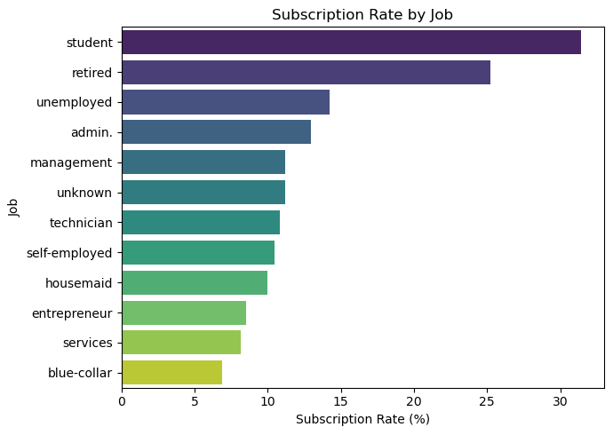

Ch 16. Logistic Regression#
1. Data Upload#

Source: UCI Machine Learning Repository, Bank Marketing Data Set
Gemini Explanation#
The provided dataset (bank-additional-full.csv) contains data related to a bank’s telemarketing campaign. It is a classic bank marketing dataset primarily used to predict whether a customer will subscribe to a term deposit.
The key characteristics of the data are as follows.
1. Data Structure#
Rows: 41,188
Columns: 21
No missing values are present.
2. Variable (Feature) Composition#
The data can be broadly divided into five categories.
Client Data
age: Agejob: Occupation (admin, blue-collar, student, etc.)marital: Marital statuseducation: Education leveldefault: Whether the client has credit in defaulthousing: Whether the client has a housing loanloan: Whether the client has a personal loan
Last Contact Data of the Current Campaign
contact: Contact communication type (cellular, telephone)month: Last contact monthday_of_week: Last contact day of the weekduration: Last contact duration in seconds
Other Campaign-Related Attributes
campaign: Number of contacts performed during this campaign for this clientpdays: Number of days since the client was last contacted from a previous campaignprevious: Number of contacts performed before this campaign for this clientpoutcome: Outcome of the previous marketing campaign (success, failure, etc.)
Socio-Economic Context Attributes
emp.var.rate: Employment variation ratecons.price.idx: Consumer price indexcons.conf.idx: Consumer confidence indexeuribor3m: Euribor 3-month rate (Euro interbank offered rate)nr.employed: Number of employees
Target Variable
y: Whether the client subscribed to a term deposit (‘yes’ or ‘no’)
Overall, this dataset contains a mix of numerical and categorical variables, and also includes economic indicators, making it suitable for analyzing marketing success probabilities and building predictive models. If you need distribution analysis or additional analysis of specific variables, you can specify the direction.
2. Summary Statistics and Subscription Rate Structure#
Gemini Analysis#
The summary statistics and subscription rate structure analysis results for the requested data are as follows.
1. Numerical Variable Summary Statistics#
Variable |
count |
mean |
std |
min |
25% |
50% |
75% |
max |
|---|---|---|---|---|---|---|---|---|
age |
41188 |
40.02 |
10.42 |
17 |
32 |
38 |
47 |
98 |
duration |
41188 |
258.29 |
259.28 |
0 |
102 |
180 |
319 |
4918 |
campaign |
41188 |
2.57 |
2.77 |
1 |
1 |
2 |
3 |
56 |
pdays |
41188 |
962.48 |
186.91 |
0 |
999 |
999 |
999 |
999 |
previous |
41188 |
0.17 |
0.49 |
0 |
0 |
0 |
0 |
7 |
emp.var.rate |
41188 |
0.08 |
1.57 |
-3.4 |
-1.8 |
1.1 |
1.4 |
1.4 |
cons.price.idx |
41188 |
93.58 |
0.58 |
92.2 |
93.08 |
93.75 |
93.99 |
94.77 |
cons.conf.idx |
41188 |
-40.50 |
4.63 |
-50.8 |
-42.7 |
-41.8 |
-36.4 |
-26.9 |
euribor3m |
41188 |
3.62 |
1.73 |
0.63 |
1.34 |
4.86 |
4.96 |
5.04 |
nr.employed |
41188 |
5167.04 |
72.25 |
4963.6 |
5099.1 |
5191 |
5228.1 |
5228.1 |
For
pdays, the mean is high because the majority of values are 999 (not contacted in a previous campaign).duration(contact duration) has very large variance and may cause target leakage, so caution is needed.
2. Categorical Variable Summary Statistics#
Variable |
count |
unique |
top (mode) |
freq (frequency) |
|---|---|---|---|---|
job |
41188 |
12 |
admin. |
10422 |
marital |
41188 |
4 |
married |
24928 |
education |
41188 |
8 |
university.degree |
12168 |
default |
41188 |
3 |
no |
32588 |
housing |
41188 |
3 |
yes |
21576 |
loan |
41188 |
3 |
no |
33950 |
contact |
41188 |
2 |
cellular |
26144 |
month |
41188 |
10 |
may |
13769 |
day_of_week |
41188 |
5 |
thu |
8623 |
poutcome |
41188 |
3 |
nonexistent |
35563 |
y (target) |
41188 |
2 |
no |
36548 |
3. Overall Subscription Rate (y) Structure#
Term Deposit Subscription (y) |
Count |
Rate (%) |
|---|---|---|
no (not subscribed) |
36548 |
88.73 |
yes (subscribed) |
4640 |
11.27 |
Only about 11.27% of all customers subscribed to the term deposit campaign. This shows a typical class imbalance phenomenon, which must be considered during predictive modeling.
4. Visualization (Subscription Rate by Job)#

The chart shows that the term deposit subscription rates for students and retirees are overwhelmingly higher than other job categories, at approximately 25–30%. In contrast, blue-collar and services workers show relatively low subscription rates below 10%.
3. Logistic Regression#
Gemini Analysis#
1. What Is Logistic Regression?#
Despite having ‘Regression’ in its name, logistic regression is actually a classification algorithm that predicts the probability that data belongs to a specific class. It is widely used for binary classification problems where the outcome is divided into two categories (e.g., success/failure, subscribed/not subscribed, 0 or 1).
Why Use Logistic Regression Instead of Ordinary Linear Regression?#
An ordinary linear regression model can produce predicted values that extend infinitely from negative (\(-\infty\)) to positive (\(+\infty\)) depending on the independent variable values. However, since what we want to know is a ‘probability,’ the result must always be between 0 and 1.
To solve this problem, logistic regression introduces the sigmoid function (or logistic function). The sigmoid function transforms any input value into a value between 0 and 1, following an S-shaped curve.
Logistic regression constructs a linear equation using the log-odds (logit) as the dependent variable — the natural logarithm of the odds (the ratio of the probability of success to the probability of failure, \(\frac{p}{1-p}\)). Expressed as a formula:
Parameter (\(\beta\)) estimation is performed using the maximum likelihood method instead of ordinary least squares (OLS).
2. Analysis Data and Model Setup#
Using the provided bank-additional-full.csv data, a logistic regression model was constructed to predict the probability that a customer subscribes to the term deposit campaign (y=1).
Target variable:
y(yes=1, no=0)Contact duration (
duration): Although it appears to have a strong correlation with subscription, in reality this is largely a consequential variable — “calls are longer because customers with subscription intent talk longer.” Since this variable cannot be known before the call, it causes serious target leakage in predictive modeling. Therefore, it was excluded from the analysis.Key independent variables used: Client information (
age,job,marital,education), economic indicators (emp.var.rate,cons.price.idx,cons.conf.idx,euribor3m,nr.employed), past campaign history (campaign,previous,poutcome), contact method (contact), etc.
3. Logistic Regression Estimation Results#
For categorical variables, one category was set as the reference and dummy variables were created for the remaining categories. Maximum likelihood estimation was then performed.
Variable |
Coef. |
Std. Error |
z-value |
p-value |
Odds Ratio |
|---|---|---|---|---|---|
const (intercept) |
-109.501 |
14.54 |
-7.531 |
0.000 |
0.0000 |
age |
0.0008 |
0.002 |
0.389 |
0.697 |
1.0008 |
campaign (number of contacts) |
-0.0445 |
0.009 |
-4.787 |
0.000 |
0.9565 |
previous (previous contacts) |
0.0461 |
0.053 |
0.869 |
0.385 |
1.0472 |
emp.var.rate (employment variation rate) |
-0.7346 |
0.059 |
-12.385 |
0.000 |
0.4797 |
cons.price.idx (consumer price index) |
1.1935 |
0.095 |
12.601 |
0.000 |
3.2985 |
cons.conf.idx (consumer confidence index) |
0.0443 |
0.005 |
8.091 |
0.000 |
1.0453 |
euribor3m (3-month Euribor) |
0.0156 |
0.075 |
0.207 |
0.836 |
1.0157 |
nr.employed (number of employees) |
-0.0006 |
0.001 |
-0.445 |
0.656 |
0.9994 |
job_blue-collar |
-0.2339 |
0.068 |
-3.452 |
0.001 |
0.7915 |
job_retired |
0.3209 |
0.093 |
3.453 |
0.001 |
1.3783 |
job_services |
-0.1841 |
0.074 |
-2.486 |
0.013 |
0.8318 |
job_student |
0.2749 |
0.099 |
2.775 |
0.006 |
1.3165 |
education_university.degree |
0.1628 |
0.079 |
2.062 |
0.039 |
1.1768 |
contact_telephone |
-0.9113 |
0.055 |
-16.482 |
0.000 |
0.4020 |
poutcome_nonexistent (prev. outcome: nonexistent) |
0.5635 |
0.085 |
6.613 |
0.000 |
1.7568 |
poutcome_success (prev. outcome: success) |
1.7790 |
0.078 |
22.879 |
0.000 |
5.9239 |
(Note: For ease of interpretation, only statistically significant key variables and some reference variables are summarized.)
4. Interpretation of Estimation Results#
The most important elements in interpreting logistic regression are the odds ratio (\(e^\beta\)) and p-value.
If the p-value is less than 0.05, the variable is interpreted as having a statistically significant influence on term deposit subscription.
An odds ratio greater than 1 indicates a factor that increases subscription probability, while one less than 1 indicates a factor that decreases it.
1. Client Attributes (Job & Education)#
Using admin. as the reference, the regression coefficients for retirees and students are positive (+), with odds ratios of 1.37 and 1.31 times, respectively. That is, retirees and students have approximately 30% or higher odds of subscribing to term deposits compared to other job categories.
Conversely, blue-collar and services workers have odds ratios below 1, indicating statistically significantly lower subscription probabilities.
For education level, having a university degree (university.degree) yields approximately 1.17 times higher subscription odds than the reference category (basic education).
The p-value for
ageitself is 0.697 (not significant), because the job variable (retired, student, etc.) already absorbs and explains age-related characteristics.
2. Previous Marketing Campaign Performance (Poutcome)#
Using previous campaign failure as the reference, customers who had succeeded in the previous campaign have a regression coefficient of 1.779 and an odds ratio of 5.92 times. This shows that loyal customers who subscribed to products in the past have an overwhelmingly higher probability of subscribing in the current campaign.
3. Current Campaign Information (Campaign & Contact)#
Number of contacts (
campaign): As the number of calls to a customer during the campaign increases, the regression coefficient is negative (−0.044) with an odds ratio of 0.95. That is, each additional contact reduces the subscription odds by 5%. This implies that excessive telemarketing actually triggers customer aversion.Contact method (
contact_telephone): Using cellular contact as the reference, the odds ratio for telephone contact is only 0.4 times. Customers contacted by landline have much lower subscription probability than those contacted by mobile phone.
4. Prediction Performance Analysis#
Gemini Analysis#
To evaluate the prediction performance of the previously estimated logistic regression model, we derived the confusion matrix, classification report, and ROC AUC score. (The prediction threshold was set at 0.5.)
1. Classification Report#
Class |
Precision |
Recall |
F1-Score |
Support |
|---|---|---|---|---|
0 (not subscribed) |
0.9076 |
0.9866 |
0.9455 |
36,548 |
1 (subscribed) |
0.6651 |
0.2093 |
0.3184 |
4,640 |
Accuracy |
0.8990 |
41,188 |
||
ROC AUC Score |
0.7828 |
Performance Metric Interpretation#
Accuracy: 89.9% This is the proportion of correct predictions across all data. While the accuracy figure appears quite high, one must consider that the actual subscription rate is only about 11%, representing extreme class imbalance. Even predicting ‘not subscribed (0)’ for everyone would yield 89% accuracy, so this metric alone should not be used to evaluate performance.
Precision: 0.6651 (for the subscribed class) This is the proportion of customers who actually subscribed among those the model predicted as ‘will subscribe (1).’ At approximately 66.5%, this is reasonably good.
Recall: 0.2093 (for the subscribed class) This is the proportion of customers the model correctly identified among those who actually subscribed (1). The recall is very low at approximately 20.9%. This means the model is missing a substantial number of potential subscribers.
F1-Score: 0.3184 This is the harmonic mean of precision and recall. The low F1-Score for the subscribed class demonstrates a typical class imbalance problem.
2. Confusion Matrix#

Predicted: No (0) |
Predicted: Yes (1) |
|
|---|---|---|
Actual: No (0) |
36,059 (True Negative) |
489 (False Positive) |
Actual: Yes (1) |
3,669 (False Negative) |
971 (True Positive) |
The model correctly classified only 971 out of 4,640 actual subscribers as ‘subscribed’ (True Positive), while incorrectly predicting the remaining 3,669 as ‘will not subscribe’ (False Negative).
Because the contact duration (
duration) was removed from the model, predictions became conservative, resulting in a substantial drop in recall.
3. ROC Curve and AUC (Area Under the Curve)#

ROC AUC Score: 0.7828
Compared to a random prediction model (AUC = 0.5), the model’s ability to separate the two classes is reasonably good (approximately 0.78).
Although the binary classification performance (recall) using a 0.5 (50%) threshold is somewhat low, this shows that the model’s ability to rank ‘subscription probability values’ (AUC) is functioning meaningfully.
Conclusion and Improvement Directions#
The current model has the limitation of missing many actual subscribers (low recall). To address this, one could consider oversampling to handle target imbalance (e.g., SMOTE), lowering the decision threshold, or adopting nonlinear models with better predictive performance (e.g., Random Forest).
5. Confusion Matrix#
Gemini Explanation#
A confusion matrix is a cross-tabulation that summarizes how predicted and actual values match and diverge when a machine learning classification model performs predictions. Through this matrix, one can intuitively grasp what types of errors the model is producing.
The structure of a 2×2 confusion matrix for binary classification is as follows.

Four Components of the Confusion Matrix#
True Positive (TP): The number of actual positives correctly predicted as positive. (Correct)
True Negative (TN): The number of actual negatives correctly predicted as negative. (Correct)
False Positive (FP): The number of actual negatives incorrectly predicted as positive. (Type I error)
False Negative (FN): The number of actual positives incorrectly predicted as negative. (Type II error)
Evaluation Metrics Derived from the Confusion Matrix#
These four values are combined to calculate various metrics for evaluating classification model performance from multiple angles.
1. Accuracy The proportion of correct predictions (TP, TN) among all predictions. Useful when class proportions are similar, but can distort model performance evaluation with imbalanced data.
2. Precision The proportion of actual positives among those predicted as ‘positive.’ This is the key metric when reducing FP (false positives) is important. (Example: spam email filtering)
3. Recall / Sensitivity The proportion correctly identified as positive by the model among actual positives. This is the key metric when reducing FN (false negatives) is important. (Example: cancer diagnosis)
4. F1 Score The harmonic mean of precision and recall. Since precision and recall often have a trade-off relationship, a high F1 score is achieved when both metrics are balanced rather than skewed to one side. Particularly useful for accurately evaluating model performance with imbalanced class data.
5. Specificity The proportion correctly predicted as negative by the model among actual negatives.
6. ROC Curve and AUC#
Gemini Explanation#

The ROC curve (Receiver Operating Characteristic Curve) and AUC (Area Under the Curve) are the most widely used visualization and quantitative metrics for comprehensively evaluating binary classification model performance. They are calculated based on the confusion matrix values described earlier.
ROC Curve#
A classification model typically outputs probability values between 0 and 1, then divides predictions into positive and negative based on a specific threshold (e.g., positive if ≥ 0.5). The ROC curve is a graph that visually shows how the model’s prediction performance changes as this threshold is continuously varied from 0 to 1.
Y-axis: True Positive Rate (TPR) This is the same concept as recall or sensitivity described earlier. It represents the proportion of actual positives that the model correctly predicted as positive.
X-axis: False Positive Rate (FPR) The proportion of actual negatives that the model incorrectly predicted as positive. This equals \(1 - \text{Specificity}\).
Lowering the threshold causes the model to make more positive predictions, increasing both TPR (correct) and FPR (incorrect). Conversely, raising the threshold makes predictions more conservative, lowering both. The trajectory of this change plotted on a 2D plane is the ROC curve.
Perfect model: The curve touches the upper-left corner (FPR=0, TPR=1). This means finding all correct answers without any errors.
Random prediction model: The diagonal dashed line through the center. This represents performance no better than flipping a coin.
AUC#
When the shape of the ROC curve alone is insufficient for clearly comparing multiple models’ performance, AUC quantifies it as a single scalar value.
Meaning: As the name suggests, it is the calculated area under the ROC curve in 2D space.
Range and interpretation: Values range from a minimum of 0.5 to a maximum of 1.0.
AUC = 1.0: The best model that perfectly separates classes.
AUC = 0.5: Performance equivalent to random prediction (area under the diagonal).
General benchmarks: Typically, ≥ 0.7 is considered good, ≥ 0.8 excellent, and ≥ 0.9 outstanding.
Advantage: It enables comprehensive evaluation of model prediction performance without depending on a single specific threshold. Additionally, it shows performance with relatively little distortion even in datasets with imbalanced class proportions.
Shall we apply these concepts to specifically interpret the ROC curve graph and AUC score from the bank marketing data analyzed with Python code earlier?
Appendix: Python Code#
import pandas as pd
import matplotlib.pyplot as plt
import seaborn as sns
# Load data
df = pd.read_csv("../Data/bank-additional-full.csv", sep=";")
# Convert target variable ('y') to 0 and 1 for computation
df['target'] = (df['y'] == 'yes').astype(int)
# 1. Generate numerical variable summary statistics
num_summary = df.drop(columns=['target']).describe().round(2)
print("### Numerical Variable Summary Statistics")
print(num_summary.to_markdown())
# 2. Generate categorical variable summary statistics
cat_summary = df.describe(include=['O']).round(2)
print("\n### Categorical Variable Summary Statistics")
print(cat_summary.to_markdown())
# 3. Calculate overall subscription rate
y_counts = df['y'].value_counts()
y_rates = df['y'].value_counts(normalize=True) * 100
y_summary = pd.DataFrame({'Count': y_counts, 'Rate (%)': y_rates}).round(2)
print("\n### Overall Subscription Rate Structure")
print(y_summary.to_markdown())
# 4. Visualize subscription rate by job
plt.figure(figsize=(7, 5))
# Calculate and sort subscription rate by job
job_rates = df.groupby('job')['target'].mean().sort_values(ascending=False) * 100
# Draw bar chart
sns.barplot(x=job_rates.values, y=job_rates.index, hue=job_rates.index, palette='viridis', legend=False)
plt.title('Subscription Rate by Job')
plt.xlabel('Subscription Rate (%)')
plt.ylabel('Job')
plt.tight_layout()
plt.show()
### Numerical Variable Summary Statistics
| | age | duration | campaign | pdays | previous | emp.var.rate | cons.price.idx | cons.conf.idx | euribor3m | nr.employed |
|:------|---------:|-----------:|-----------:|---------:|-----------:|---------------:|-----------------:|----------------:|------------:|--------------:|
| count | 41188 | 41188 | 41188 | 41188 | 41188 | 41188 | 41188 | 41188 | 41188 | 41188 |
| mean | 40.02 | 258.29 | 2.57 | 962.48 | 0.17 | 0.08 | 93.58 | -40.5 | 3.62 | 5167.04 |
| std | 10.42 | 259.28 | 2.77 | 186.91 | 0.49 | 1.57 | 0.58 | 4.63 | 1.73 | 72.25 |
| min | 17 | 0 | 1 | 0 | 0 | -3.4 | 92.2 | -50.8 | 0.63 | 4963.6 |
| 25% | 32 | 102 | 1 | 999 | 0 | -1.8 | 93.08 | -42.7 | 1.34 | 5099.1 |
| 50% | 38 | 180 | 2 | 999 | 0 | 1.1 | 93.75 | -41.8 | 4.86 | 5191 |
| 75% | 47 | 319 | 3 | 999 | 0 | 1.4 | 93.99 | -36.4 | 4.96 | 5228.1 |
| max | 98 | 4918 | 56 | 999 | 7 | 1.4 | 94.77 | -26.9 | 5.04 | 5228.1 |
### Categorical Variable Summary Statistics
| | job | marital | education | default | housing | loan | contact | month | day_of_week | poutcome | y |
|:-------|:-------|:----------|:------------------|:----------|:----------|:-------|:----------|:--------|:--------------|:------------|:------|
| count | 41188 | 41188 | 41188 | 41188 | 41188 | 41188 | 41188 | 41188 | 41188 | 41188 | 41188 |
| unique | 12 | 4 | 8 | 3 | 3 | 3 | 2 | 10 | 5 | 3 | 2 |
| top | admin. | married | university.degree | no | yes | no | cellular | may | thu | nonexistent | no |
| freq | 10422 | 24928 | 12168 | 32588 | 21576 | 33950 | 26144 | 13769 | 8623 | 35563 | 36548 |
### Overall Subscription Rate Structure
| y | Count | Rate (%) |
|:----|--------:|-----------:|
| no | 36548 | 88.73 |
| yes | 4640 | 11.27 |

import pandas as pd
import numpy as np
import statsmodels.api as sm
import io
import warnings
# 1. Load data
df = pd.read_csv("../Data/bank-additional-full.csv", sep=";")
# 2. Preprocess target variable ('yes' -> 1, 'no' -> 0)
df['target'] = (df['y'] == 'yes').astype(int)
# 3. Select independent variables (features) for the model
# duration is excluded as it is a post-call variable that can cause target leakage and act as a nuisance parameter
features = ['age', 'campaign', 'previous', 'emp.var.rate', 'cons.price.idx',
'cons.conf.idx', 'euribor3m', 'nr.employed', 'job', 'marital',
'education', 'contact', 'poutcome']
X = df[features]
# Convert categorical variables to dummy variables (drop first category to prevent multicollinearity)
X = pd.get_dummies(X, drop_first=True, dtype=int)
y = df['target']
# Add constant term
X = sm.add_constant(X)
# 4. Fit logistic regression model (maximum likelihood estimation)
model = sm.Logit(y, X).fit(maxiter=100)
# 5. Extract estimation results summary table
summary_html = model.summary().tables[1].as_html()
# Wrap string with io.StringIO for read_html
summary_df = pd.read_html(io.StringIO(summary_html), header=0, index_col=0)[0]
# 6. Calculate and append odds ratios
summary_df['Odds Ratio'] = np.exp(model.params)
summary_df = summary_df.round(4)
# Display results
print(summary_df.to_markdown())
Optimization terminated successfully.
Current function value: 0.281825
Iterations 8
| | coef | std err | z | P>|z| | [0.025 | 0.975] | Odds Ratio |
|:------------------------------|----------:|----------:|--------:|--------:|---------:|---------:|-------------:|
| const | -109.501 | 14.54 | -7.531 | 0 | -137.999 | -81.002 | 0 |
| age | 0.0008 | 0.002 | 0.389 | 0.697 | -0.003 | 0.005 | 1.0008 |
| campaign | -0.0445 | 0.009 | -4.787 | 0 | -0.063 | -0.026 | 0.9565 |
| previous | 0.0461 | 0.053 | 0.869 | 0.385 | -0.058 | 0.15 | 1.0472 |
| emp.var.rate | -0.7346 | 0.059 | -12.385 | 0 | -0.851 | -0.618 | 0.4797 |
| cons.price.idx | 1.1935 | 0.095 | 12.601 | 0 | 1.008 | 1.379 | 3.2985 |
| cons.conf.idx | 0.0443 | 0.005 | 8.091 | 0 | 0.034 | 0.055 | 1.0453 |
| euribor3m | 0.0156 | 0.075 | 0.207 | 0.836 | -0.132 | 0.163 | 1.0157 |
| nr.employed | -0.0006 | 0.001 | -0.445 | 0.656 | -0.003 | 0.002 | 0.9994 |
| job_blue-collar | -0.2339 | 0.068 | -3.452 | 0.001 | -0.367 | -0.101 | 0.7915 |
| job_entrepreneur | -0.1381 | 0.106 | -1.302 | 0.193 | -0.346 | 0.07 | 0.871 |
| job_housemaid | -0.0991 | 0.127 | -0.781 | 0.435 | -0.348 | 0.149 | 0.9056 |
| job_management | -0.1018 | 0.074 | -1.37 | 0.171 | -0.247 | 0.044 | 0.9032 |
| job_retired | 0.3209 | 0.093 | 3.453 | 0.001 | 0.139 | 0.503 | 1.3783 |
| job_self-employed | -0.0823 | 0.1 | -0.819 | 0.413 | -0.279 | 0.115 | 0.921 |
| job_services | -0.1841 | 0.074 | -2.486 | 0.013 | -0.329 | -0.039 | 0.8318 |
| job_student | 0.2749 | 0.099 | 2.775 | 0.006 | 0.081 | 0.469 | 1.3165 |
| job_technician | -0.0185 | 0.061 | -0.302 | 0.763 | -0.139 | 0.102 | 0.9816 |
| job_unemployed | -0.0206 | 0.11 | -0.188 | 0.851 | -0.236 | 0.195 | 0.9796 |
| job_unknown | -0.2187 | 0.209 | -1.046 | 0.296 | -0.628 | 0.191 | 0.8036 |
| marital_married | 0.0318 | 0.059 | 0.536 | 0.592 | -0.084 | 0.148 | 1.0323 |
| marital_single | 0.1104 | 0.067 | 1.637 | 0.102 | -0.022 | 0.243 | 1.1167 |
| marital_unknown | 0.3191 | 0.358 | 0.892 | 0.372 | -0.382 | 1.02 | 1.3759 |
| education_basic.6y | 0.092 | 0.103 | 0.897 | 0.37 | -0.109 | 0.293 | 1.0964 |
| education_basic.9y | -0.0276 | 0.081 | -0.34 | 0.734 | -0.187 | 0.132 | 0.9727 |
| education_high.school | 0.0377 | 0.079 | 0.477 | 0.633 | -0.117 | 0.193 | 1.0384 |
| education_illiterate | 1.0141 | 0.635 | 1.597 | 0.11 | -0.23 | 2.259 | 2.7569 |
| education_professional.course | 0.0847 | 0.087 | 0.971 | 0.332 | -0.086 | 0.256 | 1.0884 |
| education_university.degree | 0.1628 | 0.079 | 2.062 | 0.039 | 0.008 | 0.318 | 1.1768 |
| education_unknown | 0.154 | 0.104 | 1.484 | 0.138 | -0.049 | 0.357 | 1.1665 |
| contact_telephone | -0.9113 | 0.055 | -16.482 | 0 | -1.02 | -0.803 | 0.402 |
| poutcome_nonexistent | 0.5635 | 0.085 | 6.613 | 0 | 0.396 | 0.731 | 1.7568 |
| poutcome_success | 1.779 | 0.078 | 22.879 | 0 | 1.627 | 1.931 | 5.9239 |
import pandas as pd
import numpy as np
import statsmodels.api as sm
from sklearn.metrics import confusion_matrix, classification_report, roc_auc_score, roc_curve
import matplotlib.pyplot as plt
import seaborn as sns
df = pd.read_csv("../Data/bank-additional-full.csv", sep=";")
df['target'] = (df['y'] == 'yes').astype(int)
features = ['age', 'campaign', 'previous', 'emp.var.rate', 'cons.price.idx',
'cons.conf.idx', 'euribor3m', 'nr.employed', 'job', 'marital',
'education', 'contact', 'poutcome']
X = df[features]
X = pd.get_dummies(X, drop_first=True, dtype=int)
y = df['target']
X = sm.add_constant(X)
# Fit model
model = sm.Logit(y, X).fit(disp=0)
# Predict (threshold = 0.5)
y_pred_prob = model.predict(X)
y_pred = (y_pred_prob >= 0.5).astype(int)
# Calculate evaluation metrics
conf_matrix = confusion_matrix(y, y_pred)
class_report = classification_report(y, y_pred, output_dict=True)
roc_auc = roc_auc_score(y, y_pred_prob)
print("### Confusion Matrix")
print(pd.DataFrame(conf_matrix, index=['True: No (0)', 'True: Yes (1)'], columns=['Pred: No (0)', 'Pred: Yes (1)']).to_markdown())
print("\n### Classification Report")
print(pd.DataFrame(class_report).transpose().round(4).to_markdown())
print(f"\n### ROC AUC Score: {roc_auc:.4f}")
# Visualization 1: Confusion matrix heatmap
plt.figure(figsize=(6, 5))
sns.heatmap(conf_matrix, annot=True, fmt='d', cmap='Blues', cbar=False,
xticklabels=['No (0)', 'Yes (1)'], yticklabels=['No (0)', 'Yes (1)'])
plt.title('Confusion Matrix')
plt.xlabel('Predicted Label')
plt.ylabel('True Label')
plt.tight_layout()
plt.show()
# Visualization 2: ROC curve
plt.figure(figsize=(6, 5))
fpr, tpr, thresholds = roc_curve(y, y_pred_prob)
plt.plot(fpr, tpr, color='darkorange', lw=2, label=f'ROC curve (AUC = {roc_auc:.4f})')
plt.plot([0, 1], [0, 1], color='navy', lw=2, linestyle='--')
plt.xlim([0.0, 1.0])
plt.ylim([0.0, 1.05])
plt.xlabel('False Positive Rate')
plt.ylabel('True Positive Rate')
plt.title('Receiver Operating Characteristic (ROC)')
plt.legend(loc="lower right")
plt.tight_layout()
plt.show()
### Confusion Matrix
| | Pred: No (0) | Pred: Yes (1) |
|:--------------|---------------:|----------------:|
| True: No (0) | 36059 | 489 |
| True: Yes (1) | 3669 | 971 |
### Classification Report
| | precision | recall | f1-score | support |
|:-------------|------------:|---------:|-----------:|----------:|
| 0 | 0.9076 | 0.9866 | 0.9455 | 36548 |
| 1 | 0.6651 | 0.2093 | 0.3184 | 4640 |
| accuracy | 0.899 | 0.899 | 0.899 | 0.899 |
| macro avg | 0.7864 | 0.5979 | 0.6319 | 41188 |
| weighted avg | 0.8803 | 0.899 | 0.8748 | 41188 |
### ROC AUC Score: 0.7828


4. Social and Macroeconomic Indicators#
Consumer price index (
cons.price.idx) and consumer confidence index (cons.conf.idx) have positive coefficients, meaning subscription probability increases when prices or consumer confidence are high.Conversely, when the employment variation rate (
emp.var.rate) is high (economic overheating or employment expansion), term deposit subscription probability drops substantially (odds ratio of 0.47). This can be inferred as people preferring other investments over the safe asset of term deposits during boom periods.